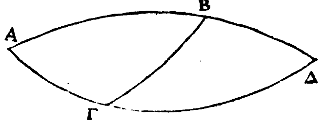

Prop. X. Theor. (Halley 1758, pp. 9–10)¶
Menelai Alexandrini Sphaericorum Lib. I Prop. X. Theor. (Halley 1758, pp. 9–10)
Enuntiatio (Halley 1758, pp. 9–10)
In omni triangulo Sphaerico, si duo latera simul sumpta aequalia fuerint semicirculo; producto reliquo latere, angulus exterior aequalis erit interiori & opposito super latus productum. Si vero duo latera simul minora sint semicirculo, tum angulus exterior major erit interiore & opposito super latus productum. Quod si
f. 0026 · p. 10

duo latera simul majora fuerint semicirculo, erit angulus exterior minor interiore sibi opposito.
Sit ΑΒΓ triangulum Sphaericum, & duo latera ejus ΑΒ, ΒΓ simul sumpta sint aequalia semicirculo, & producatur arcus ΑΓ: dico angulum ΒΓΔ exteriorem aequalem esse angulo Α interiori eidemque opposito. Ac si fuerint duo arcus ΑΒ, ΒΓ minores semicirculo, erit angulus ΒΓΔ major angulo Α. Si vero arcus ΑΒ, ΒΓ majores fuerint semicirculo, erit angulus ΒΓΔ minor angulo Α.
Producatur arcus ΑΒ ad occursum arcus ΑΓ, cui conveniat in Δ. Cumque arcus ΑΒ, ΒΓ sint aequales semicirculo, duo autem arcus ΑΒ, ΒΔ sunt etiam aequales semicirculo; erit igitur arcus ΒΔ aequalis arcui ΒΓ, & (per 2dam hujus) angulus ΒΓΔ angulo ΒΔΓ. Est autem angulus ΒΔΓ aequalis angulo Α; quare angulus ΒΓΔ aequalis est angulo Α.
Sint jam duo arcus ΑΒ, ΒΓ simul sumpti minores semicirculo; sunt autem duo arcus ΑΒ, ΒΔ simul aequales semicirculo: quare arcus ΒΔ major est arcu ΒΓ, adeoque (per 9nam hujus) angulus ΒΓΔ major est angulo Δ. Est autem angulus Δ aequalis angulo Α, eadem enim est inclinatio: quare angulus exterior ΒΓΔ major est interiore Α.
Si vero fuerint duo arcus ΑΒ, ΒΓ simul majores semicirculo: dico angulum exteriorem ΒΓΔ minorem esse angulo interiore Α eidem opposito. Est enim arcus ΑΒΔ semicirculus, ac duo arcus ΑΒ, ΒΓ sunt majores semicirculo; quare arcus ΒΓ major est arcu ΒΔ, ac proinde angulus Δ major est angulo ΒΓΔ. Sed angulus Δ aequalis est angulo Α: angulus igitur ΒΓΔ minor est angulo Α. Q. E. D.
Ac manifesta est hujus conversa: nempe quod si in triangulo Sphaerico, producto uno latere, angulus exterior aequalis fuerit interiori & opposito, tum reliqui duo arcus simul sumpti aequantur semicirculo; ac si angulus exterior major fuerit interiore & opposito, erunt reliqui arcus simul minores semicirculo; si vero angulus exterior minor fuerit interiore & opposito, erunt reliqua latera trianguli simul sumpta majora semicirculo.